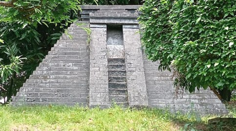
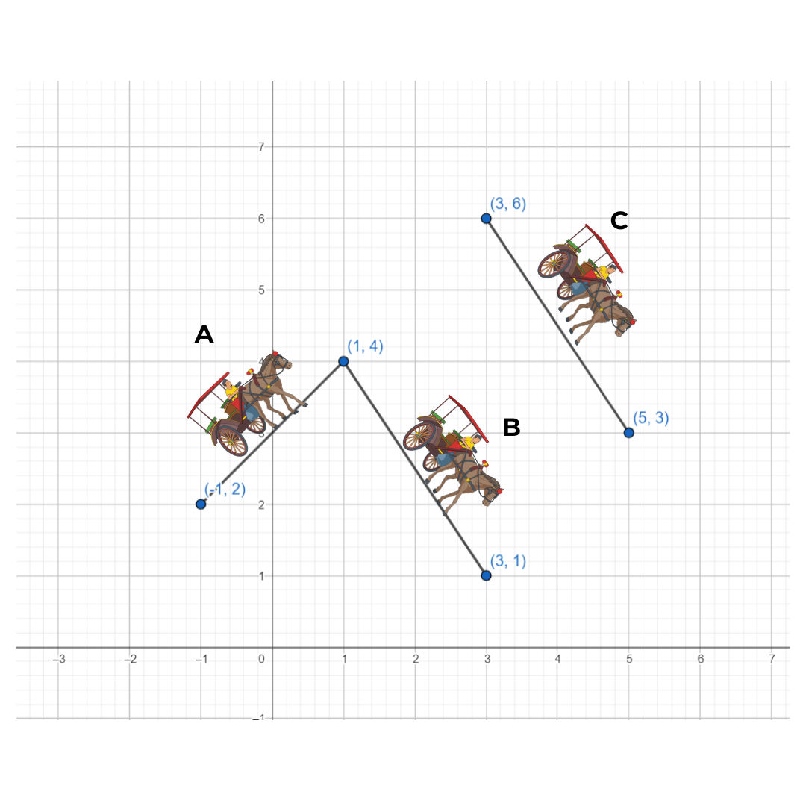

Perhatikan bentuk dari candi Sukuh di bawah ini.

Candi Sukuh adalah sebuah kompleks candi Hindu yang terletak di lereng Gunung Lawu, sekitar 35 kilometer sebelah barat daya Solo, Jawa Tengah, Indonesia. Dibangun pada awal abad ke-15 Masehi, Candi Sukuh merupakan contoh penting dari arsitektur Majapahit yang unik dan menarik.
Kompleks candi ini memiliki ciri khas berupa struktur piramida yang menjulang tinggi dengan puncak yang menyerupai trapesium. Di dalam kompleks ini terdapat beberapa struktur utama, termasuk candi utama yang dihiasi dengan relief-relief erotis yang menggambarkan berbagai adegan kehidupan dan mitologi Hindu.
Candi Sukuh selain menjadi objek bersejarah dapat juga dijadikan sebagai objek pembelajaran matematika. Tujuan dari dijadikannya Candi Sukuh sebagai objek pembelajaran matematika adalah agar para generasi muda tetap mengenal salah satu peninggalan sejarah yang ada.
Perhatikan bentuk Candi Sukuh dari depan candi. Bagian depan Candi Sukuh memiliki bentuk seperti trapesium sama kaki yang kedua sisi sampingnya memiliki kemiringan.

Seorang siswa memotret Candi Sukuh dari sisi depan. Siswa tersebut melihat Candi Sukuh bagian depan seperti bentuk trapesium siku-siku sama kaki. Ia tertarik dengan susunan batu yang membentuk sisi miring Candi Sukuh. Dikarenakan ketertarikannya itu, ia berinisiatif untuk mengukur kemiringan Candi Sukuh. Dikarenakan kamera sudah memiliki perbandingan tersendiri dari ukuran objek dalam dunia nyata, maka siswa tersebut dapat mengukur kemiringan dari Candi Sukuh dengan berbantuan koordinat kartesius dan foto yang telah diambil. Perhatikan penjelasan di bawah ini untuk mengetahui kemiringan dari Candi Sukuh.
Perhatikan gambar di atas, sisi samping candi Sukuh memiliki kemiringan atau gradien garis lurus. Berikut cara menghitung gradien/kemiringan pada koordinat kartesius.
$m=\frac{\Deltay}{\Deltax}$
$\Leftrightarrow m=\frac{9,5}{7,5}$
$\Leftrightarrow m=\frac{1,9}{1,5}$
$\Leftrightarrow m=\frac{19}{15}$

Gradien atau kemiringan merupakan rasio antara perubahan sisi tegak dengan perubahan sisi mendatar. Maka, didapatkan rumus gradien sebagai berikut.
Gradien $=frac{Perubahan sisi tegak}{Perubahan sisi mendatar}$
Perhatikan ilustrasi mengenai gerak delman di bawah ini!.
Delman A bergerak dari titik $(-1,2)$ ke $(2,4)$
Delman B bergerak dari titik $(1,4)$ ke $(3,1)$
Delman C bergerak dari titik $(3,6)$ ke $(5,3)$

Berikut merupakan rumus untuk mencari gradien suatu persamaan garis lurus jika diketahui beberapa syarat.
$m=\frac{y_{2}-y_{1}}{x_{2}-x_{1}}$
Garis C yang dilewati oleh delman C melalui dua titik yaitu $(3,6)$ dan $(5,3)$ sehingga didapatkan gradiennya adalah
$m=\frac{y_{2}-y_{1}}{x_{2}-x_{1}}$
$Leftrightarrowm=\frac{3-6}{5-2}$
$Leftrightarrowm=\frac{-3}{3}$
$Leftrightarrowm=-1$
Jadi, delman C bergerak dengan arah miring sebesar -1 atau gradiennya adalah -1.
$m_{1}=m_{2}$
Garis C sejajar dengan garis B yang dilewati oleh delman B. Garis B melalui titik $(1,4)$ dan $(3,1)$. Sehingga didapatkan gradien dari garis B adalah
$m=\frac{y_{2}-y_{1}}{x_{2}-x_{1}}$
$Leftrightarrowm=\frac{1-4}{3-1}$
$Leftrightarrowm=\frac{-3}{3}$
$Leftrightarrowm=-1$
Jadi, didapatkan gradien garis B adalah -1. Gradien garis C dan garis B adalah sama karena garis C dan garis B merupakan dua garis yang sejajar.
$m_{1}*m_{2}=-1$
Garis B tegak lurus dengan garis A yang dilewati oleh delman A. Garis A melalui titik $(-1,2)$ dan $(2,4)$. Sehingga didapatkan gradien dari garis B adalah
$m=\frac{4-2}{1-(-1)}$
$Leftrightarrowm=\frac{2}{2}$
$Leftrightarrowm=1$
Jadi, didapatkan gradien garis A adalah 1. Gradien garis B merupakan -1 dari gradien garis A karena garis B dan garis A saling tegak lurus.